CODING AGENTS AS PIXEL WORLD MODELS
traex/GPT-6.1-Sol · 0191
点击播放 · 原生 RGB 像素
逐轮保存的候选
回放视频、检查图与代码变化。
每份候选均可单独播放。实际图片检查记录在下方工具轨迹中。
候选 01播放与检查图
点击播放 · 原生 RGB 像素
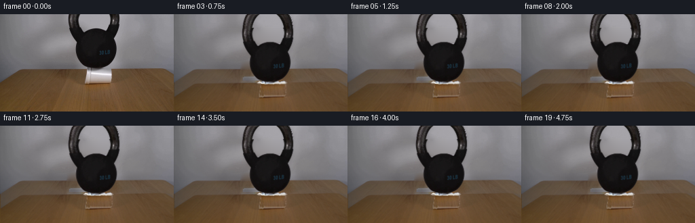
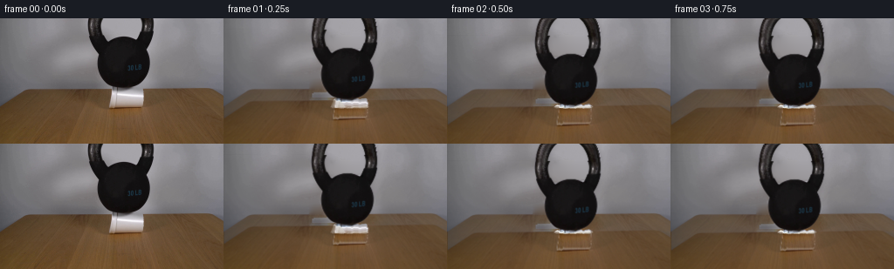
展开代码变化
--- 上一保存版本
+++ 本次保存版本
@@ -0,0 +1,164 @@
+from pathlib import Path
+import numpy as np
+from PIL import Image, ImageDraw, ImageFilter
+import cv2
+from scipy.ndimage import gaussian_filter, binary_fill_holes
+from artifact_io import save
+
+ROOT=Path(__file__).resolve().parent
+W,H=256,144
+S=4
+original=np.array(Image.open(ROOT/'first_frame.png').convert('RGB'))
+g=original.mean(axis=2)
+# Recover the two handle sections and the body of the weight from their
+# photographic silhouette, including their original textured surfaces.
+mask=np.zeros((H,W),np.uint8)
+for y in range(80):
+ ranges=[(97,126),(153,180)] if y<22 else ([(99,128),(124,180)] if y<27 else [(100,179)])
+ for lo,hi in ranges:
+ xx=np.flatnonzero(g[y,lo:hi]<112)+lo
+ if len(xx):mask[y,xx[0]:xx[-1]+1]=1
+mask[79,:]=0
+mask[79,132:150]=1
+mask[80,:]=0
+# Matte at the photographic boundary; don't flatten the handle highlights.
+dist=cv2.distanceTransform(mask,cv2.DIST_L2,5)
+alpha=mask.astype(float)
+edge=dist<=1.01
+alpha[edge]=np.clip((151-g[edge])/(151-20),0,1)
+# Include fractional edge coverage just outside the solid silhouette.
+dil=cv2.dilate(mask,np.ones((3,3),np.uint8))>0
+outer=dil & (mask==0)
+# exclude the dark cast shadow immediately below the physical base
+outer[80:,:]=False
+alpha[outer]=np.clip((150-g[outer])/130,0,0.65)
+# Plate with the now-hidden regions filled from the immediately adjacent wall/table.
+cm=np.zeros((H,W),np.uint8)
+cm[78:104,123:166]=1
+rm=cv2.dilate(mask,np.ones((5,5),np.uint8))
+rm=np.maximum(rm,cm)
+plate=cv2.inpaint(original,rm*255,8,cv2.INPAINT_TELEA)
+# Harmonic continuation in the wall makes an uninterrupted backdrop instead of
+# propagating black metal pixels across the area that is being exposed.
+wallmask=rm.copy();wallmask[81:]=0
+wallmask[:,:95]=0;wallmask[:,184:]=0
+wall=plate.astype(np.float64)
+for it in range(700):
+ avg=(np.roll(wall,1,0)+np.roll(wall,-1,0)+np.roll(wall,1,1)+np.roll(wall,-1,1))/4
+ # continue offscreen with a constant gradient-free boundary
+ avg[0]=(wall[1]+np.roll(wall[0],1,0)+np.roll(wall[0],-1,0))/3
+ wall[wallmask>0]=avg[wallmask>0]
+plate=np.clip(wall,0,255).astype(np.uint8)
+# Only touch pixels belonging to this physical setup or its soft shadows.
+# Everything else in this fixed-shot photograph is preserved without changes.
+back=plate.astype(float)
+# Separate edge colors from the matte so that translation doesn't carry a halo.
+fg=original.astype(float)
+for c in range(3):
+ fg[:,:,c]=np.clip((fg[:,:,c]-(1-alpha)*plate[:,:,c])/np.maximum(alpha,0.05),0,255)
+# Extend the cropped iron handle above the image using elliptical side arcs.
+PAD=34
+ext=np.zeros((H+PAD,W,3),np.float32)
+exta=np.zeros((H+PAD,W),np.float32)
+ext[PAD:]=fg;exta[PAD:]=alpha
+for y in range(-PAD,0):
+ # Ring sides continue out of frame, not a new object entering the shot.
+ center_y=6.0
+ ro=38.0*np.sqrt(max(0,1-((y-center_y)/48.0)**2))
+ ri=24.0*np.sqrt(max(0,1-((y-center_y)/31.0)**2))
+ for x in range(98,179):
+ dx=abs(x-138.3)
+ cov=np.clip(min(ro-dx,dx-ri)+.5,0,1)
+ if cov<=0:continue
+ side=0 if x<138 else 1
+ outer0=100.8 if side==0 else 175.8
+ inner0=114.8 if side==0 else 162.4
+ frac=np.clip((dx-ri)/max(ro-ri,.01),0,1)
+ sx=int(round(inner0+(outer0-inner0)*frac))
+ color=original[(abs(y)//4)%5,sx].astype(float)
+ ext[y+PAD,x]=color
+ exta[y+PAD,x]=cov
+# Upsampled source photographic foreground for smooth subpixel movement.
+def up(a):return cv2.resize(a,(a.shape[1]*S,a.shape[0]*S),interpolation=cv2.INTER_CUBIC)
+backhi=up(back)
+a_hi=np.clip(up(exta),0,1)
+f_hi=up(ext*exta[:,:,None])
+
+cupalpha=np.zeros((H,W),np.float32)
+cp=Image.fromarray(np.uint8(cupalpha*255));d=ImageDraw.Draw(cp)
+d.polygon([(128,78),(162,79),(165,90),(164,101),(125,103)],fill=255)
+cupalpha=np.asarray(cp).astype(float)/255
+# Cup is situated horizontally, with its flared rim at the left.
+# Sample its original white surface and preserve the highlight during collapse.
+cup=np.zeros((26,47,3),np.float32)
+ca=np.zeros((26,47),np.float32)
+for yy in range(26):
+ for xx in range(47):
+ sy=78+yy;sx=121+xx
+ cup[yy,xx]=original[sy,sx]
+ ca[yy,xx]=cupalpha[sy,sx]
+cup_hi=up(cup*ca[:,:,None]); ca_hi=np.clip(up(ca),0,1)
+
+def blend(img, color, a):
+ return img*(1-a[:,:,None])+color
+
+def foam_surface(img,dy,t):
+ # Compression of the thin cup wall progresses nonuniformly as the shell buckles.
+ q=np.clip(dy/20.2,0,1)
+ hh=24-dy
+ yy,xx=np.mgrid[:H*S,:W*S].astype(np.float32); X=xx/S;Y=yy/S
+ # The bottom stays on the table, while the rim spreads slightly.
+ spread=1+0.105*q
+ x0=144.5+(X-144.5)/spread
+ corr=0.65*q*np.sin((X-124)*.63)+.25*q*np.sin((X-124)*1.42)
+ v=(Y-103-corr)/max(hh,3.5)+1
+ sy=(v*24+0.5)*S
+ sx=(x0-121)*S
+ ac=cv2.remap(ca_hi,sx.astype(np.float32),sy.astype(np.float32),cv2.INTER_LINEAR,borderMode=cv2.BORDER_CONSTANT)
+ fc=cv2.remap(cup_hi,sx.astype(np.float32),sy.astype(np.float32),cv2.INTER_LINEAR,borderMode=cv2.BORDER_CONSTANT)
+ img=blend(img,fc,ac)
+ if q>0.20:
+ # Intersecting folded walls form irregular foam ridges, not a shrinking block.
+ layer=Image.new('RGBA',(W*S,H*S));dr=ImageDraw.Draw(layer)
+ def poly(points,fill):dr.polygon([(int(x*S),int(y*S)) for x,y in points],fill=fill)
+ top=103-max(hh,3.5)
+ op=int(255*np.clip((q-.2)/.8,0,1))
+ poly([(124-2*q,102.0),(128-3*q,top+1.2),(134,top+2.0),(139,101.5),(134,102.8)],(213,209,198,op))
+ poly([(122.0,102.0),(126,99.5-2.2*(1-q)),(132,101.1),(139,101.4),(145,102.4),(149,100.8),(157,101.0),(163,100.1),(167,101.7),(164,103.0),(152,103.3),(146,102.7),(135,103.6),(128,102.8)],(232,230,224,op))
+ poly([(122.5,102.0),(127,100.2),(129,101.2),(128,102.6)],(245,244,238,op))
+ poly([(133,102.7),(137,101.8),(144,102.5),(153,101.5),(159,101.9),(166,101.3),(164,102.5),(155,102.8),(147,103.3)],(178,173,163,int(op*.7)))
+ poly([(131,103.0),(137,102.2),(144,102.8),(150,102.2),(158,102.5),(163,102.0),(163,102.6),(155,103.1),(148,103.4),(141,103.3)],(242,240,233,int(op*.75)))
+ ll=np.asarray(layer).astype(float);a=ll[:,:,3]/255
+ img=img*(1-a[:,:,None])+ll[:,:,:3]*a[:,:,None]
+ return img
+
+def frame(t):
+ # Plastic buckling absorbs the impact, with a short, damped settling motion.
+ if t<=.5:
+ dy=20.1*(1-np.exp(-(t/.245)**2))
+ else:
+ dy=20.1+.24*np.exp(-(t-.5)*6)*np.sin((t-.5)*23)
+ dx=.6*(1-np.exp(-t*4))
+ angle=0.45*(1-np.exp(-t*4))+.18*np.exp(-t*4)*np.sin(t*15)
+ M=cv2.getRotationMatrix2D((141*S,(76+PAD)*S),angle,1)
+ M[0,2]+=dx*S;M[1,2]+=(dy-PAD)*S
+ a=cv2.warpAffine(a_hi,M,(W*S,H*S),flags=cv2.INTER_LINEAR)
+ f=cv2.warpAffine(f_hi,M,(W*S,H*S),flags=cv2.INTER_LINEAR)
+ img=backhi.copy()
+ # The load darkens the contact patch beneath it; the wider shadow remains soft.
+ yy,xx=np.mgrid[:H*S,:W*S];x=xx/S;y=yy/S
+ shadow=.14*np.exp(-((x-145)/24)**2-((y-103.5)/3.3)**2)
+ img*=1-shadow[:,:,None]
+ # Cast shadow on the wall and tabletop follows the rigid weight.
+ sa=cv2.warpAffine(a,np.float32([[1,0,2*S],[0,1,2*S]]),(W*S,H*S))
+ sa=gaussian_filter(sa,2.4*S)*.08
+ img*=1-sa[:,:,None]
+ img=foam_surface(img,dy,t)
+ img=blend(img,f,a)
+ out=cv2.resize(np.clip(img,0,255),(W,H),interpolation=cv2.INTER_AREA)
+ return np.rint(out).astype(np.uint8)
+
+frames=np.stack([original]+[frame(i/4) for i in range(1,20)])
+save(frames,ROOT)
+Image.fromarray(plate).save(ROOT/'.tmp/plate.png')
+Image.fromarray(np.uint8(alpha*255)).save(ROOT/'.tmp/matte.png')
候选 02播放与检查图
点击播放 · 原生 RGB 像素
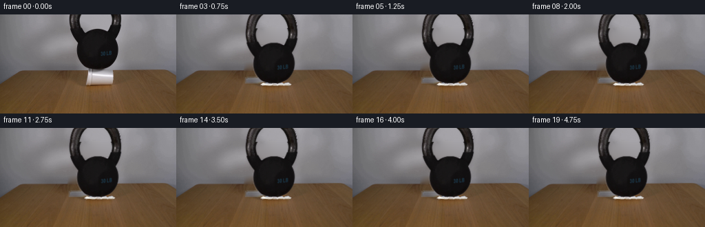
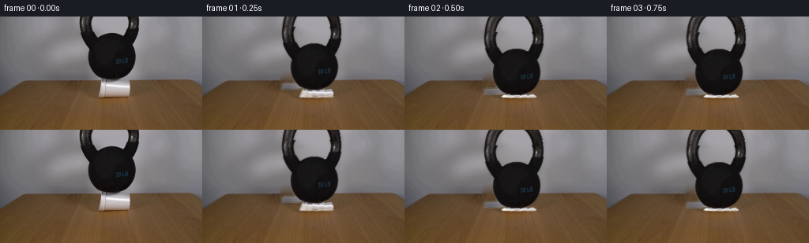
展开代码变化
--- 上一保存版本 +++ 本次保存版本 @@ -24,7 +24,7 @@ # Matte at the photographic boundary; don't flatten the handle highlights. dist=cv2.distanceTransform(mask,cv2.DIST_L2,5) alpha=mask.astype(float) -edge=dist<=1.01 +edge=(mask>0) & (dist<=1.01) alpha[edge]=np.clip((151-g[edge])/(151-20),0,1) # Include fractional edge coverage just outside the solid silhouette. dil=cv2.dilate(mask,np.ones((3,3),np.uint8))>0
候选 03播放与检查图
点击播放 · 原生 RGB 像素
展开代码变化
--- 上一保存版本
+++ 本次保存版本
@@ -14,9 +14,9 @@
# photographic silhouette, including their original textured surfaces.
mask=np.zeros((H,W),np.uint8)
for y in range(80):
- ranges=[(97,126),(153,180)] if y<22 else ([(99,128),(124,180)] if y<27 else [(100,179)])
+ ranges=[(97,126),(153,180)] if y<22 else ([(99,128),(124,180)] if y<27 else ([(100,179)] if y<40 else [(110,177)]))
for lo,hi in ranges:
- xx=np.flatnonzero(g[y,lo:hi]<112)+lo
+ xx=np.flatnonzero(g[y,lo:hi]<(112 if y<40 else 85))+lo
if len(xx):mask[y,xx[0]:xx[-1]+1]=1
mask[79,:]=0
mask[79,132:150]=1
@@ -51,6 +51,17 @@
plate=np.clip(wall,0,255).astype(np.uint8)
# Only touch pixels belonging to this physical setup or its soft shadows.
# Everything else in this fixed-shot photograph is preserved without changes.
+# Restore the rear edge which is horizontal across this part of the shot.
+# Exposed wood is copied from the same depth on the immediately adjacent board.
+for y in range(78,110):
+ for x in range(99,171):
+ if y < 81:
+ if rm[y,x] or (123<=x<=165):
+ u=np.clip((x-97)/81,0,1)
+ plate[y,x]=(original[y,97].astype(float)*(1-u)+original[y,178].astype(float)*u).astype(np.uint8)
+ elif rm[y,x]:
+ source_x=x-44
+ plate[y,x]=original[y,source_x]
back=plate.astype(float)
# Separate edge colors from the matte so that translation doesn't carry a halo.
fg=original.astype(float)
@@ -128,6 +139,7 @@
poly([(122.5,102.0),(127,100.2),(129,101.2),(128,102.6)],(245,244,238,op))
poly([(133,102.7),(137,101.8),(144,102.5),(153,101.5),(159,101.9),(166,101.3),(164,102.5),(155,102.8),(147,103.3)],(178,173,163,int(op*.7)))
poly([(131,103.0),(137,102.2),(144,102.8),(150,102.2),(158,102.5),(163,102.0),(163,102.6),(155,103.1),(148,103.4),(141,103.3)],(242,240,233,int(op*.75)))
+ layer=layer.filter(ImageFilter.GaussianBlur(.38*S))
ll=np.asarray(layer).astype(float);a=ll[:,:,3]/255
img=img*(1-a[:,:,None])+ll[:,:,:3]*a[:,:,None]
return img
候选 04播放与检查图
可观测工具轨迹
实际执行的命令与返回图片。
命令 1exit 0
/bin/bash -lc "ls -la && cat prompt.txt && printf '\\n---RULES---\\n' && cat GENERATION_RULES.md"
命令 2exit 0
/bin/bash -lc "cat artifact_io.py && python - <<'PY'
from PIL import Image
im=Image.open('first_frame.png'); print(im.size)
im.resize((1024,576)).save('.tmp/enlarged.png')
PY"命令 3exit 0
/bin/bash -lc "python - <<'PY'
import importlib.util
for k in ['numpy','PIL','scipy','cv2']:
print(k, bool(importlib.util.find_spec(k)))
from PIL import Image
im=Image.open('first_frame.png');im.crop((95,0,181,108)).resize((516,648)).save('.tmp/objects.png')
PY"命令 4exit 0
/bin/bash -lc "python - <<'PY'
from PIL import Image
import numpy as np
im=np.array(Image.open('first_frame.png'));g=im.mean(2)
for y in [0,5,10,20,30,40,50,60,70,75,78,79,80,81,82,90,100,104]:
a=np.where(g[y,95:180]<65)[0]+95
if len(a): print(y,a.min(),a.max(),[(int(k),im[y,k].tolist()) for k in [a.min(),a.max()]])
PY"命令 5exit 0
/bin/bash -lc "python - <<'PY'
from PIL import Image
import numpy as np
im=np.asarray(Image.open('first_frame.png')); gray=im.mean(2)
for y in [0,1,2,4,8,12,16,20,24,28]:
a=gray[y]<100; rows=[];start=None
for x in range(95,180):
if a[x] and start is None: start=x
if not a[x] and start is not None: rows.append((start,x-1));start=None
print(y,rows)
PY"命令 6exit 0
/bin/bash -lc "cat > generate.py <<'PY'
from pathlib import Path
import numpy as np
from PIL import Image, ImageDraw, ImageFilter
import cv2
from scipy.ndimage import gaussian_filter, binary_fill_holes
from artifact_io import save
ROOT=Path(__file__).resolve().parent
W,H=256,144
S=4
original=np.array(Image.open(ROOT/'first_frame.png').convert('RGB'))
g=original.mean(axis=2)
# Recover the two handle sections and the body of the weight from their
# photographic silhouette, including their original textured surfaces.
mask=np.zeros((H,W),np.uint8)
for y in range(80):
ranges=[(97,126),(153,180)] if y<22 else ([(99,128),(124,180)] if y<27 else [(100,179)])
for lo,hi in ranges:
xx=np.flatnonzero(g[y,lo:hi]<112)+lo
if len(xx):mask[y,xx[0]:xx[-1]+1]=1
mask[79,:]=0
mask[79,132:150]=1
mask[80,:]=0
# Matte at the photographic boundary; don't flatten the handle highlights.
dist=cv2.distanceTransform(mask,cv2.DIST_L2,5)
alpha=mask.astype(float)
edge=dist<=1.01
alpha[edge]=np.clip((151-g[edge])/(151-20),0,1)
# Include fractional edge coverage just outside the solid silhouette.
dil=cv2.dilate(mask,np.ones((3,3),np.uint8))>0
outer=dil & (mask==0)
# exclude the dark cast shadow immediately below the physical base
outer[80:,:]=False
alpha[outer]=np.clip((150-g[outer])/130,0,0.65)
# Plate with the now-hidden regions filled from the immediately adjacent wall/table.
cm=np.zeros((H,W),np.uint8)
cm[78:104,123:166]=1
rm=cv2.dilate(mask,np.ones((5,5),np.uint8))
rm=np.maximum(rm,cm)
plate=cv2.inpaint(original,rm*255,8,cv2.INPAINT_TELEA)
# Harmonic continuation in the wall makes an uninterrupted backdrop instead of
# propagating black metal pixels across the area that is being exposed.
wallmask=rm.copy();wallmask[81:]=0
wallmask[:,:95]=0;wallmask[:,184:]=0
wall=plate.astype(np.float64)
for it in range(700):
avg=(np.roll(wall,1,0)+np.roll(wall,-1,0)+np.roll(wall,1,1)+np.roll(wall,-1,1))/4
# continue offscreen with a constant gradient-free boundary
avg[0]=(wall[1]+np.roll(wall[0],1,0)+np.roll(wall[0],-1,0))/3
wall[wallmask>0]=avg[wallmask>0]
plate=np.clip(wall,0,255).astype(np.uint8)
# Only touch pixels belonging to this physical setup or its soft shadows.
# Everything else in this fixed-shot photograph is preserved without changes.
back=plate.astype(float)
# Separate edge colors from the matte so that translation doesn't carry a halo.
fg=original.astype(float)
for c in range(3):
fg[:,:,c]=np.clip((fg[:,:,c]-(1-alpha)*plate[:,:,c])/np.maximum(alpha,0.05),0,255)
# Extend the cropped iron handle above the image using elliptical side arcs.
PAD=34
ext=np.zeros((H+PAD,W,3),np.float32)
exta=np.zeros((H+PAD,W),np.float32)
ext[PAD:]=fg;exta[PAD:]=alpha
for y in range(-PAD,0):
# Ring sides continue out of frame, not a new object entering the shot.
center_y=6.0
ro=38.0*np.sqrt(max(0,1-((y-center_y)/48.0)**2))
ri=24.0*np.sqrt(max(0,1-((y-center_y)/31.0)**2))
for x in range(98,179):
dx=abs(x-138.3)
cov=np.clip(min(ro-dx,dx-ri)+.5,0,1)
if cov<=0:continue
side=0 if x<138 else 1
outer0=100.8 if side==0 else 175.8
inner0=114.8 if side==0 else 162.4
frac=np.clip((dx-ri)/max(ro-ri,.01),0,1)
sx=int(round(inner0+(outer0-inner0)*frac))
color=original[(abs(y)//4)%5,sx].astype(float)
ext[y+PAD,x]=color
exta[y+PAD,x]=cov
# Upsampled source photographic foreground for smooth subpixel movement.
def up(a):return cv2.resize(a,(a.shape[1]*S,a.shape[0]*S),interpolation=cv2.INTER_CUBIC)
backhi=up(back)
a_hi=np.clip(up(exta),0,1)
f_hi=up(ext*exta[:,:,None])
cupalpha=np.zeros((H,W),np.float32)
cp=Image.fromarray(np.uint8(cupalpha*255));d=ImageDraw.Draw(cp)
d.polygon([(128,78),(162,79),(165,90),(164,101),(125,103)],fill=255)
cupalpha=np.asarray(cp).astype(float)/255
# Cup is situated horizontally, with its flared rim at the left.
# Sample its original white surface and preserve the highlight during collapse.
cup=np.zeros((26,47,3),np.float32)
ca=np.zeros((26,47),np.float32)
for yy in range(26):
for xx in range(47):
sy=78+yy;sx=121+xx
cup[yy,xx]=original[sy,sx]
ca[yy,xx]=cupalpha[sy,sx]
cup_hi=up(cup*ca[:,:,None]); ca_hi=np.clip(up(ca),0,1)
def blend(img, color, a):
return img*(1-a[:,:,None])+color
def foam_surface(img,dy,t):
# Compression of the thin cup wall progresses nonuniformly as the shell buckles.
q=np.clip(dy/20.2,0,1)
hh=24-dy
yy,xx=np.mgrid[:H*S,:W*S].astype(np.float32); X=xx/S;Y=yy/S
# The bottom stays on the table, while the rim spreads slightly.
spread=1+0.105*q
x0=144.5+(X-144.5)/spread
corr=0.65*q*np.sin((X-124)*.63)+.25*q*np.sin((X-124)*1.42)
v=(Y-103-corr)/max(hh,3.5)+1
sy=(v*24+0.5)*S
sx=(x0-121)*S
ac=cv2.remap(ca_hi,sx.astype(np.float32),sy.astype(np.float32),cv2.INTER_LINEAR,borderMode=cv2.BORDER_CONSTANT)
fc=cv2.remap(cup_hi,sx.astype(np.float32),sy.astype(np.float32),cv2.INTER_LINEAR,borderMode=cv2.BORDER_CONSTANT)
img=blend(img,fc,ac)
if q>0.20:
# Intersecting folded walls form irregular foam ridges, not a shrinking block.
layer=Image.new('RGBA',(W*S,H*S));dr=ImageDraw.Draw(layer)
def poly(points,fill):dr.polygon([(int(x*S),int(y*S)) for x,y in points],fill=fill)
top=103-max(hh,3.5)
op=int(255*np.clip((q-.2)/.8,0,1))
poly([(124-2*q,102.0),(128-3*q,top+1.2),(134,top+2.0),(139,101.5),(134,102.8)],(213,209,198,op))
poly([(122.0,102.0),(126,99.5-2.2*(1-q)),(132,101.1),(139,101.4),(145,102.4),(149,100.8),(157,101.0),(163,100.1),(167,101.7),(164,103.0),(152,103.3),(146,102.7),(135,103.6),(128,102.8)],(232,230,224,op))
poly([(122.5,102.0),(127,100.2),(129,101.2),(128,102.6)],(245,244,238,op))
poly([(133,102.7),(137,101.8),(144,102.5),(153,101.5),(159,101.9),(166,101.3),(164,102.5),(155,102.8),(147,103.3)],(178,173,163,int(op*.7)))
poly([(131,103.0),(137,102.2),(144,102.8),(150,102.2),(158,102.5),(163,102.0),(163,102.6),(155,103.1),(148,103.4),(141,103.3)],(242,240,233,int(op*.75)))
ll=np.asarray(layer).astype(float);a=ll[:,:,3]/255
img=img*(1-a[:,:,None])+ll[:,:,:3]*a[:,:,None]
return img
def frame(t):
# Plastic buckling absorbs the impact, with a short, damped settling motion.
if t<=.5:
dy=20.1*(1-np.exp(-(t/.245)**2))
else:
dy=20.1+.24*np.exp(-(t-.5)*6)*np.sin((t-.5)*23)
dx=.6*(1-np.exp(-t*4))
angle=0.45*(1-np.exp(-t*4))+.18*np.exp(-t*4)*np.sin(t*15)
M=cv2.getRotationMatrix2D((141*S,(76+PAD)*S),angle,1)
M[0,2]+=dx*S;M[1,2]+=(dy-PAD)*S
a=cv2.warpAffine(a_hi,M,(W*S,H*S),flags=cv2.INTER_LINEAR)
f=cv2.warpAffine(f_hi,M,(W*S,H*S),flags=cv2.INTER_LINEAR)
img=backhi.copy()
# The load darkens the contact patch beneath it; the wider shadow remains soft.
yy,xx=np.mgrid[:H*S,:W*S];x=xx/S;y=yy/S
shadow=.14*np.exp(-((x-145)/24)**2-((y-103.5)/3.3)**2)
img*=1-shadow[:,:,None]
# Cast shadow on the wall and tabletop follows the rigid weight.
sa=cv2.warpAffine(a,np.float32([[1,0,2*S],[0,1,2*S]]),(W*S,H*S))
sa=gaussian_filter(sa,2.4*S)*.08
img*=1-sa[:,:,None]
img=foam_surface(img,dy,t)
img=blend(img,f,a)
out=cv2.resize(np.clip(img,0,255),(W,H),interpolation=cv2.INTER_AREA)
return np.rint(out).astype(np.uint8)
frames=np.stack([original]+[frame(i/4) for i in range(1,20)])
save(frames,ROOT)
Image.fromarray(plate).save(ROOT/'.tmp/plate.png')
Image.fromarray(np.uint8(alpha*255)).save(ROOT/'.tmp/matte.png')
PY
OPENBLAS_NUM_THREADS=1 python generate.py"命令 7exit 0
/bin/bash -lc "python - <<'PY'
from PIL import Image
Image.open('frames/03.png').resize((1024,576)).save('.tmp/res.png')
PY"命令 8exit 0
/bin/bash -lc "python - <<'PY'
p='generate.py'
s=open(p).read().replace('edge=dist<=1.01','edge=(mask>0) & (dist<=1.01)')
open(p,'w').write(s)
PY
OPENBLAS_NUM_THREADS=1 python generate.py
python - <<'PY'
from PIL import Image
Image.open('frames/03.png').resize((1024,576)).save('.tmp/res.png')
PY"命令 9exit 0
/bin/bash -lc "python - <<'PY'
from PIL import Image
Image.open('.tmp/plate.png').resize((1024,576)).save('.tmp/pl.png')
PY"命令 10exit 0
/bin/bash -lc "python - <<'PY'
from PIL import Image
import numpy as np
g=np.array(Image.open('first_frame.png')).mean(2)
for y in range(35,80,2):
a=np.flatnonzero(g[y,110:177]<85)+110
print(y,a[0],a[-1])
PY"命令 11exit 0
/bin/bash -lc "python - <<'PY'
p='generate.py';s=open(p).read();s=s.replace('[(100,179)])','([(100,179)] if y<40 else [(110,177)]))').replace('g[y,lo:hi]<112','g[y,lo:hi]<(112 if y<40 else 85)')
# lower threshold protects against the cast shadow on the cup at the base
s=s.replace('mask[79,132:150]=1','mask[79,132:150]=1')
# Replace inpaint near the table with small adjacent pieces of the real wood,
# preserve the horizontal rear edge of the table.
s=s.replace('back=plate.astype(float)', '''# Restore the rear edge which is horizontal across this part of the shot.
# Exposed wood is copied from the same depth on the immediately adjacent board.
for y in range(78,110):
for x in range(99,171):
if y < 81:
if rm[y,x] or (123<=x<=165):
u=np.clip((x-97)/81,0,1)
plate[y,x]=(original[y,97].astype(float)*(1-u)+original[y,178].astype(float)*u).astype(np.uint8)
elif rm[y,x]:
source_x=x-44
plate[y,x]=original[y,source_x]
back=plate.astype(float)''')
# smooth drawn compressed folds a little before compositing
s=s.replace(\"ll=np.asarray(layer).astype(float);a=ll[:,:,3]/255\", \"layer=layer.filter(ImageFilter.GaussianBlur(.38*S))\\n ll=np.asarray(layer).astype(float);a=ll[:,:,3]/255\")
open(p,'w').write(s)
PY
OPENBLAS_NUM_THREADS=1 python generate.py
python - <<'PY'
from PIL import Image
Image.open('frames/03.png').resize((1024,576)).save('.tmp/res.png')
PY"命令 12exit 0
/bin/bash -lc "which ffmpeg || true; python - <<'PY'
import numpy as np
from PIL import Image
p=np.load('pixels.npz')['pixels']
assert p.shape==(144,256,20)
a=np.array(Image.open('frames/00.png').convert('RGB'))
b=np.array(Image.open('first_frame.png').convert('RGB'))
assert np.array_equal(a,b)
print('Validated 20 RGB frames; first frame identical.')
PY"视觉工具实际返回图片 1
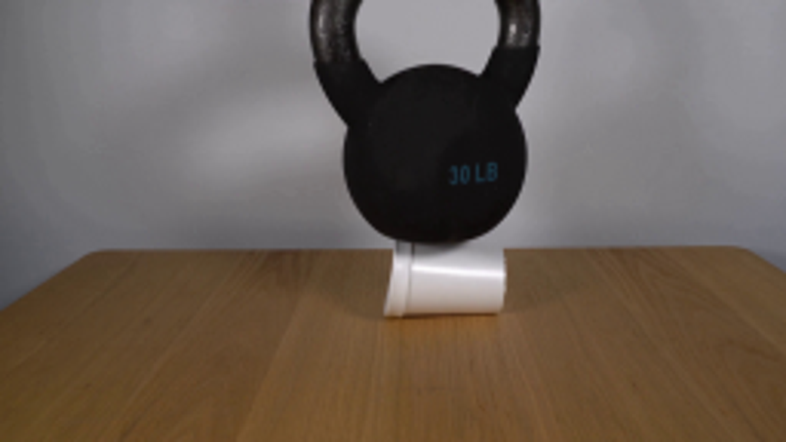
视觉工具实际返回图片 2
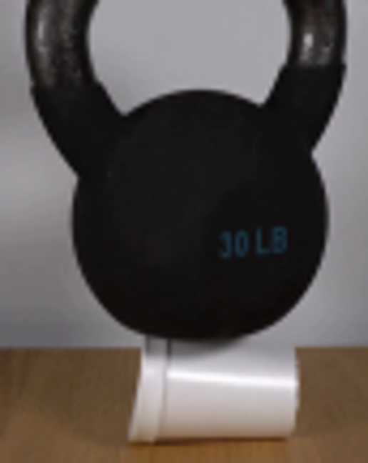
视觉工具实际返回图片 3

视觉工具实际返回图片 4
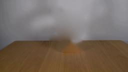
视觉工具实际返回图片 5
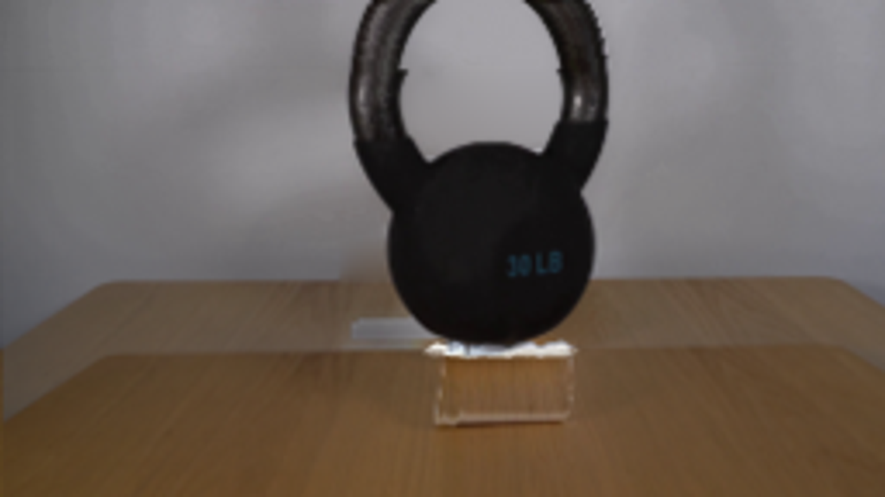
视觉工具实际返回图片 6
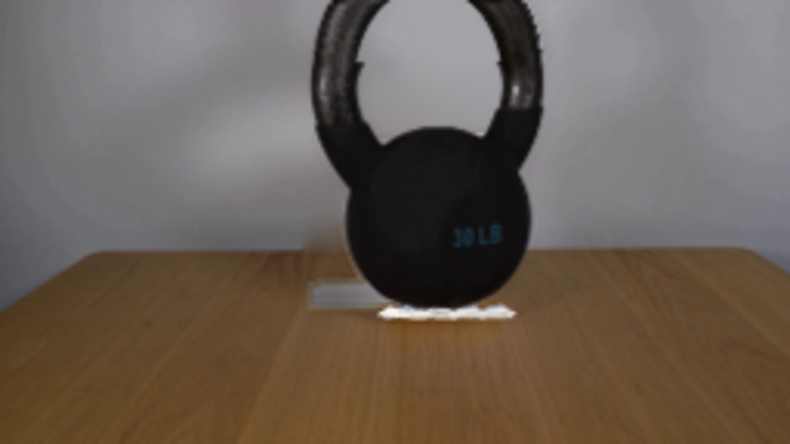
视觉工具实际返回图片 7
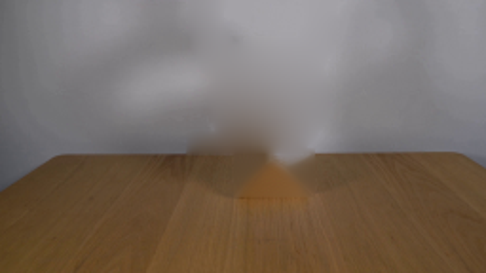
视觉工具实际返回图片 8
视觉工具实际返回图片 9
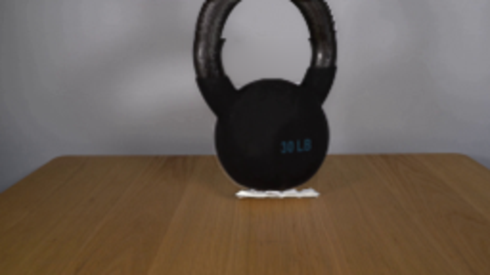
视觉工具实际返回图片 10
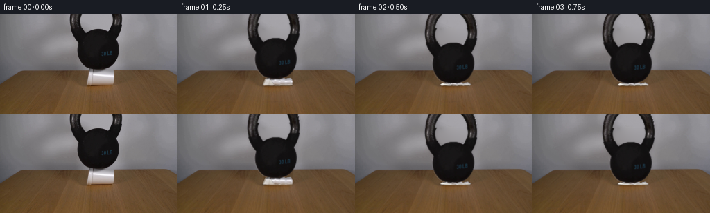
保存候选 4 份；完成命令 12 次；可验证图片返回 10 张。原始 API 响应与完整日志保留在本地。